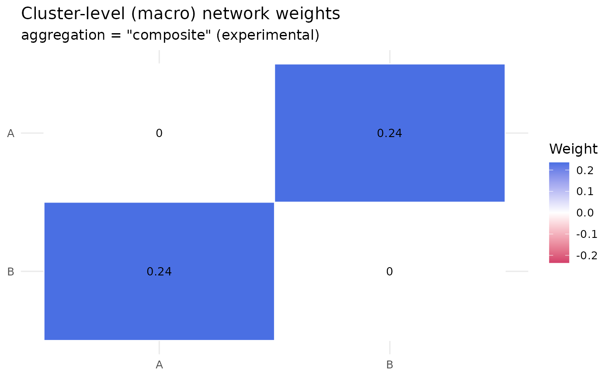

Multi-Cluster Multi-Level Aggregation for Psychometric Networks
Source:R/mcml_pc.R
build_mcml_pc.Rdbuild_mcml_pc() collapses a psychometric network whose nodes are assigned
to clusters into a cluster-level (macro) network and one within-cluster
network per cluster, and returns an mcml_pc object. It is the counterpart
of build_mcml() for undirected association networks: it reads a
netobject estimated with cor, pcor or glasso, or a numeric data
frame of observations, from which it estimates the node-level network
first. Experimental: the API and the aggregation formulas may
change between releases.
Partial correlations do not aggregate by arithmetic. The submatrix of a
partial-correlation matrix is not the partial-correlation network of
that subsystem, because the conditioning set changes, and averaging entries
across blocks is descriptive only. The aggregations (see aggregation)
therefore differ in status:
- Score paths, re-estimated (
"scaled","composite","mean","median","loadings") Each observation gets one score per cluster, formed from the cluster's member items (see
weighting), and the estimator inmethodis re-fitted on these scores, so the macro network is a genuine correlation, partial-correlation or EBICglasso network among clusters. Needs raw data."average"(descriptive)The macro edge between clusters A and B is the mean of the signed node-level weights between members of A and members of B; the macro diagonal is the mean within-block off-diagonal weight. Needs only the weight matrix, so it works on a netobject without data. Signed averaging can cancel opposite-sign edges: read it as a net average association, not a connection strength.
"escoufier"(descriptive, multivariate)The macro edge is Escoufier's RV coefficient between the member blocks, a matrix correlation in
[0, 1]computed from the block covariance structure. No scores are formed and nothing is re-estimated, so nothing is lost to averaging; signs are not represented. Needs raw data."cancor"(descriptive, multivariate)The macro edge is the first canonical correlation between the member blocks: the strongest linear relationship any weighting of A's items can have with any weighting of B's items, an upper bound on what the score paths can recover. Needs raw data.
Every aggregation inherits the cluster assignment. Before reading the macro
network, check the item table with item_loadings(): an item more strongly
connected to another cluster than to its own is flagged as misfit and
named in a warning. A flagged item means every aggregation carries a
doubtful membership, so fix the assignment rather than ignore the flag.
How far the composite weights move under case resampling is checked with
loading_stability(). The macro network of a score path carries its
scores as data, so bootstrap_network() (edge-weight intervals) and,
with at least three clusters, vertex_bootstrap() (network-level
intervals) work on it directly, as in
bootstrap_network(macro_network(fit)), and vertex_compare() (also with
at least three clusters) compares the macro networks of two fits;
macro_network() extracts it.
Usage
build_mcml_pc(
x,
clusters,
aggregation = c("scaled", "composite", "mean", "median", "loadings", "average",
"escoufier", "cancor"),
method = c("pcor", "glasso", "cor"),
within = c("reestimate", "subnetwork"),
weighting = c("equal", "strength", "eigen", "closeness", "betweenness",
"expected_influence", "specificity", "pca", "factor", "item_total"),
cor_method = c("pearson", "spearman", "polychoric"),
signed = TRUE,
id_col = NULL,
fa_method = c("ml", "paf", "minres", "cfa"),
...
)
# S3 method for class 'mcml_pc'
print(x, digits = 3, ...)
# S3 method for class 'mcml_pc'
summary(object, ...)
# S3 method for class 'mcml_pc'
plot(x, digits = 2, ...)Arguments
- x
The network or the data. A
netobject(or acograph_network) estimated with an undirected association method (cor,pcor,glasso, or their aliases), whose weights, stored data and method are reused; a directed network raises an error and points tobuild_mcml(). Or a numeric data frame of observations (one row per observation, one column per item), from which the node-level network is estimated withmethodandcor_method; a non-numeric column raises an error. Any other input, a matrix included, raises an error. For theprint()andplot()methods: anmcml_pcobject.- clusters
The cluster membership, in one of three forms: a named list of node-label vectors (the names are the cluster labels), a data frame whose first column holds the node names and second column the cluster labels (read by position, column names are not used), or a vector of cluster labels named by node. Every node must belong to exactly one cluster, every member must be a node, and at least two clusters are needed; anything else raises an error.
- aggregation
How the clusters are collapsed into the macro network. Default
"scaled". The score paths re-estimate the network on one score per cluster and observation:"scaled"The weighted mean of the standardised member items.
"composite"The former name of
"scaled", kept as an alias."mean"As
"scaled", on the raw (unstandardised) items."median"The row-wise median of the raw, sign-corrected items. The median is unweighted, so the weight magnitudes from
weightingare not used, but a sign-carrying weighting still sets the item signs."loadings"As
"scaled", with the items weighted by their within-cluster network strength (weighting = "strength") unlessweightingis given.
The descriptive ones relate the blocks without forming scores:
"average"(the mean item-pair edge of each between-cluster block),"escoufier"(Escoufier's RV coefficient) and"cancor"(the first canonical correlation); the Description says how each can be read. Every path except"average"needs raw data; without it, an error suggests"average".- method
The network estimator for the node-level network of a data frame, the macro network of the score paths and the re-estimated within-cluster networks:
"pcor"(default),"glasso"or"cor", as inbuild_network(). Whenxis acor,pcororglassonetobject andmethodis not given, the netobject's own method is used; any other undirected netobject (anisingone, say) uses the default"pcor".- within
How the within-cluster networks are formed:
"reestimate"(default) re-fits the estimator on each cluster's items,"subnetwork"slices the node-level weight matrix (see Details). Input without raw data uses"subnetwork"whatever is set.- weighting
How the items are weighted inside their cluster score on the score paths; on
"median"only the signs of a sign-carrying scheme are used. Default"equal"("strength"underaggregation = "loadings"); the descriptive aggregations ignore it, and their item table keeps the"strength"weights. The weights are absolute values normalised to sum to 1 within each cluster."equal"1/m per item: the scale as scored.
"strength"The item's mean absolute connection to the other members of its cluster in the node-level network (what
aggregation = "loadings"selects), so items that anchor their cluster count more in its score. This is Nestimate's own weighting, related in spirit to network loadings (Christensen & Golino 2021) but not a reimplementation of any EGA-family estimator. A cluster whose within-cluster connections are all zero gets equal weights, with a warning."eigen"The leading eigenvector of the cluster's block of the node-level network: like strength, with extra weight for items connected to other well-connected items.
"pca"The first principal component of the member items' correlation matrix: a weighting from the data, blind to the estimated network. A correlation block with non-finite entries gives equal weights, with a warning.
"factor"The standardised loadings of a one-factor model per cluster, the classical latent-variable weighting.
fa_methodsets the extraction and the correlations followcor_method, so polychoric factor analysis of ordinal items is one call. A cluster with fewer than 3 items, or whose factor fit fails, falls back to"pca"with a warning."closeness","betweenness"The item's closeness or betweenness centrality within its cluster's block of the node-level network (absolute weights). Betweenness can be zero for every item of a densely connected cluster; equal weights are then used, with a warning, and the same holds for all-zero closeness.
"expected_influence"The item's mean signed connection to the other members of its cluster (Robinaugh et al. 2016): like strength, but opposite-sign connections subtract, and a negative value marks a reverse-keyed item.
"specificity"The misfit margin: own-cluster strength minus the strongest cross-cluster strength, floored at 0, so an item that belongs as much to another cluster adds nothing to its score; the weighting twin of the
misfitflag. When no item of a cluster has a positive margin, equal weights are used, with a warning."item_total"The corrected item-total correlation of each item with the mean of the other (standardised, sign-corrected) members: the classical scale-construction weighting.
weightingalso takes a named numeric vector with one entry per item (its absolute values are normalised within each cluster and, whensigned = TRUE, its signs set the item signs after the orientation described below), or a functionfunction(W_block, data_block, nodes)that returns one finite weight per item, evaluated per cluster; a vector missing an item, or a function returning anything else, raises an error.Network-based and data-based weightings answer different questions, and comparing them is informative: when they diverge, the network's view of the cluster differs from its latent-variable view. The schemes whose weights cannot be negative (
"equal","strength","closeness","betweenness","specificity") keep the eigenvector-based item signs; the sign-carrying ones ("eigen","pca","factor","expected_influence","item_total", a custom vector or function) set the signs from their own values. Within each cluster those values are oriented first, negated when they sum to a negative number, so the sign carrying the larger total counts as positive and only the items of the other sign are flipped: marking the reverse-keyed items of a cluster negative works only when they do not outweigh the rest in total.- cor_method
The correlation used when estimating from raw data:
"pearson"(default),"spearman"or"polychoric"(needs lavaan; see Details).- signed
Whether reverse-keyed items are flipped in the cluster scores (see Details). Default
TRUE.- id_col
Identifier columns to drop from data-frame input before the analysis. Default
NULL. Use it for the id columns thatconvert_sequence_format()adds withformat = "frequency", whose per-sequence counts otherwise feed this function directly as behaviour profiles. Aridcolumn is left out of the node-level network without being listed, as in the association estimators ofbuild_network(), except withcor_method = "polychoric", where it must be listed too; any other id column, including the.rida wide table gets, is read as an item unless listed. A column not in the data raises an error; a netobject ignores the argument.- fa_method
The extraction method for
weighting = "factor"; ignored otherwise."ml"(default) Maximum likelihood,
stats::factanal()on the correlation matrix thatcor_methodgives."paf"Iterated principal axis factoring, starting from the squared multiple correlations and iterating the communalities on the reduced correlation matrix.
"minres"Minimum residual (unweighted least squares): the uniquenesses are chosen to minimise the squared off-diagonal residuals.
"cfa"A one-factor confirmatory model fitted with
lavaan::cfa()(standardised loadings); withcor_method = "polychoric"the items are declared ordered, which gives the categorical (DWLS) factor model.
On well-behaved unidimensional clusters the four agree closely; a divergence points to a cluster prone to Heywood cases or not unidimensional.
- ...
Further arguments passed to the
fa_methodbackend, spelled as that backend spells them, and allowed only withweighting = "factor"(otherwise they raise an error, as does an unnamed one):lavaan::cfa()arguments for"cfa"(estimator = "WLSMV",missing = "fiml",se = "robust", ...),stats::factanal()arguments for"ml", andmax_iter/tolfor"paf"(other names are not used there);"minres"uses none.estimatoris lavaan's and raises an error for any otherfa_method, since the network estimator is set bymethod. Arguments the backend call sets itself (modelanddatafor"cfa";covmat,n.obs,factors,xanddatafor"ml";Rfor"paf"and"minres") are dropped with a warning: the model is always the one-factor model per cluster, because the score needs exactly one weight per item. For theprint(),summary()andplot()methods: ignored.- digits
For the
print()andplot()methods: the decimal places of the printed macro weights (default3) or of the tile labels (default2).- object
For the
summary()method: anmcml_pcobject.
Value
An mcml_pc object. print() shows the aggregation, estimator,
cluster sizes, the misfit and flipped-item counts (when there are any)
and the macro weights;
summary() returns one row per macro edge; plot() draws the macro
weights as a heatmap. item_loadings() gives the item table,
composites() the cluster scores of a score path, macro_network() the
macro network, as_networks() the macro and within-cluster networks as
a netobject_group, loading_stability() the stability of the
composite weights, and cograph::plot_mcml() draws the two-layer
network. The object's fields:
- macro
The cluster-level netobject (k x k, undirected).
- clusters
Named list of within-cluster netobjects (
NULLfor a singleton cluster).- cluster_members
Named list of each cluster's node labels.
- loadings
The item table that
item_loadings()returns, one row per node.- node_network
The node-level netobject the aggregation was based on, kept for the diagnostics and
loading_stability().- data
The raw data as a data frame when available, else
NULL.- composites
The cluster scores of a score path, else
NULL.- meta
List:
aggregation(the name as the caller spelled it),method,within,weighting,weighting_spec(the scheme itself, a custom vector or function included),fa_method,fa_args,scale,cor_method,signed,n_nodes,n_clusters,cluster_sizes,n_misfit,n_flipped,directed = FALSE,source = "pc"andexperimental = TRUE.methodandweightingareNAon the descriptive paths, which re-estimate no macro network, andfa_method/fa_argsare set only forweighting = "factor".
For the methods: print() returns x invisibly; summary()
returns a data frame with one row per macro edge (the upper triangle)
and columns from, to and weight; plot() returns a ggplot.
Details
Item diagnostics. Every item's mean absolute connection to the
other members of every cluster is computed from the node-level
network. item_loadings() reports, per item, its own-cluster loading
(signed by the eigenvector orientation; a sign-carrying weighting is
recorded in the sign column instead), its composite weight, its strongest cross-cluster loading and the
cluster that loading points to, and a misfit flag set when the cross-cluster
loading exceeds the own-cluster loading. A singleton cluster has no
within-cluster connections, so its item is never flagged.
Reverse-keyed items. With signed = TRUE (default), the item
signs come from the leading eigenvector of the within-cluster block of the
node-level network, oriented so most items are positive. An item with a
negative sign enters its cluster score with sign -1, so a reverse-keyed
item reinforces its cluster score instead of cancelling it. Flips are
reported in the sign column of item_loadings() and, on the score
paths, in a warning. On the score paths a sign-carrying weighting sets the
signs from its own values instead (see weighting).
Missing data. Cluster scores are row-wise weighted means over the
observed members, with the weights renormalised per row; a row with
no observed member is NA and the estimator drops it with a message.
Node-level estimation applies the estimators' own complete-case handling,
and "escoufier" and "cancor" use the rows complete on every item.
Ordinal items. cor_method = "polychoric" (needs the
lavaan package) estimates the node-level and within-cluster networks
from polychoric correlations, which suits Likert items. Cluster scores are
continuous, so the macro network is always re-estimated from their Pearson
correlations.
Within-cluster networks follow within. "reestimate" re-fits
the estimator on the member columns alone, giving the conditional
structure of the subsystem; "subnetwork" slices the node-level weight
matrix and is descriptive (for pcor and glasso it keeps the
conditioning on items outside the cluster). Input without raw data always
uses "subnetwork". A singleton cluster gets no within-cluster network
(NULL).
All constituent networks are undirected (meta$directed = FALSE), so
renderers that detect directedness, such as cograph::plot_mcml(), draw
them without arrowheads.
Methods
plot()draws the macro (cluster-level) weights as a heatmap in the package's diverging palette, with each weight printed in its tile. For the two-layer network drawing usecograph::plot_mcml(), which acceptsmcml_pcobjects and draws them undirected.
References
Escoufier, Y. (1973). Le traitement des variables vectorielles. Biometrics, 29(4), 751-760.
Hotelling, H. (1936). Relations between two sets of variates. Biometrika, 28(3/4), 321-377.
Robinaugh, D. J., Millner, A. J., & McNally, R. J. (2016). Identifying highly influential nodes in the complicated grief network. Journal of Abnormal Psychology, 125(6), 747-757.
Christensen, A. P., & Golino, H. (2021). On the equivalency of factor and network loadings. Behavior Research Methods, 53, 1563-1580.
Epskamp, S., & Fried, E. I. (2018). A tutorial on regularized partial correlation networks. Psychological Methods, 23(4), 617-634.
See also
build_mcml for transition networks,
loading_stability for composite-weight stability,
bootstrap_network and vertex_bootstrap
for uncertainty on the macro network.
Examples
set.seed(1)
n <- 200
sigma <- matrix(0.15, 6, 6)
sigma[1:3, 1:3] <- 0.5
sigma[4:6, 4:6] <- 0.5
diag(sigma) <- 1
z <- matrix(rnorm(n * 6), n, 6) %*% chol(sigma)
df <- as.data.frame(z)
names(df) <- c("a1", "a2", "a3", "b1", "b2", "b3")
clusters <- list(A = c("a1", "a2", "a3"), B = c("b1", "b2", "b3"))
fit <- build_mcml_pc(df, clusters, aggregation = "composite",
method = "cor")
fit # macro (cluster-level) weights
#> MCML for Psychometric Networks (experimental)
#> Aggregation: composite | Estimator: cor | Within: reestimate | cor: pearson | Weights: equal
#> 6 nodes in 2 clusters (A: 3, B: 3)
#>
#> Macro weights:
#> A B
#> A 0.000 0.235
#> B 0.235 0.000
summary(fit) # one row per macro edge
#> from to weight
#> 1 A B 0.235001
plot(fit) # heatmap of the same weights
